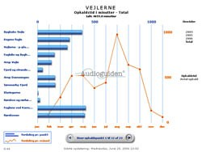

Natur- og Kulturformidling - inde og ude
Naturvejledere,
guider og andre, der beskæftiger sig med kommunikation overfor et
publikum, kan med Audioguiden udvide sin service til at omfatte døgnets
24 timer.
Audioguiden giver mulighed for information målrettet bestemte grupper af modtagere som f.eks. børn eller synshandicappede.
En af de helt store fordele ved Audioguiden er at informationerne kan tilpasses årstidernes variationer eller skift i løbet af døgnets timer.
- og det bedste af det hele: Brugeren har selv det hardware, der skal bruges i forbindelse med formidlingen. Altså ingen tidsforbrug i forbindelse med opladning eller vedligehold for udbyderen af servicen.
Byvandringer
Med Audioguiden er øjnene ”fri” til at gå på opdagelse. På en vandring gennem byens rum kan
Audioguiden gå bag om byens facader. Her kommer Audioguidens mange muligheder til sin ret. Brugeren
kan vælge det niveau, der findes passende. Nogle vil høre de små sjove anekdoter, der knytter sig til de
enkelte huse og steder, andre vil måske høre om byggestil og håndværksmæssige detaljer og endelig
kan Audioguiden formidle byen set fra børnehøjde.
Ved hjælp af sms service kan brugeren på sin mobiltelefon modtage links til relevante hjemmesider udvalgt på baggrund af brugerens valg ude i byrummet.
Generel informationstjeneste
Audioguiden er perfekt til formidling af events og til løbende forklaring af igangværende projekter overfor
en nysgerrig og videbegærlig offentlighed. Indenfor denne kategori kan for eksempel nævnes formidling
af arkæologiske udgravninger, fortælling om igangværende naturgenopretningsprojekter eller
servicemeddelelser i forbindelse med festivaler, vikingemarkeder eller lystbådehavne.
Mulighederne er mange, kun fantasien sætter grænsen. Vi tilbyder fleksible løsninger udarbejdet ud fra den enkelte formidlers ønsker og behov.
Produktinformation og messer
I
dag er det ofte ikke nok at sælge en vare, uanset dennes kvalitet.
Køberen vil have oplevelser, og historien bag produktet er ikke
uvæsentlig i forbindelse med branding. Audioguiden giver mulighed for
at formidle budskabet, oplevelsen eller fortællingen bag om produktet
på en personlig måde. Man kan differentiere informationerne – tryk 1
for de tørre fakta, tryk 2 for de saftige tanker bag produktet…
Også inden for messer åbner Audioguiden muligheder for at give kunden en ekstra oplevelse i forhold til det produkt, hun skal købe. Audioguiden er ikke en erstatning for sælgeren, men et spændende supplement til kundens totaloplevelse. Med Audioguiden får du en skræddersyet løsning, der tilgodeser dine behov for kundeinformation.
Undersøgelser og statistik
Som kunde hos Audioguiden kan du holde dig ajour med trafikken på din telefonservice.
Du kan via webinterfacet se, hvor mange, der har anvendt systemet, og hvilke numre de har ringet til.
Der kan udbygges med flere statistikmoduler, som åbner mulighed for at lave undersøgelser over hvornår folk anvender systemet, hvor længe den enkelte bruger er på m.v.
Den gode fortælling
Med
Audioguiden får du den levende fortælling direkte der ude hvor
historierne skabes. Audioguiden er således det næstbedste alternativ
til en rigtig levende fortæller. Til forskel fra fortælleren kan
Audioguiden formidle hele døgnet, året rundt. Audioguiden er således
natur- og kulturformidlerens forlængede arm. Den levende fortæller kan
få sine historier ud, selv når hun holder fri.